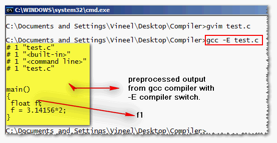

Preprocessing is the act of processing the input before it is being parsed(i.e., before splited in to tokens)
Consider the following code
#define PI 3.14156
main()
{
float f1;
f = PI*2;
}
Assuming this code is saved as test.c issue the following command(remember compiler options are case sensitive)
gcc -E test.c
'-E' switch stops the compilation process after preprocessing. Now gcc.exe will produce the following output .

output produced by GCC after preprocessing
output produced by GCC after preprocessing
The preprocessing phase of the compiler replaced all the preprocessor directives like PI e.t.c in the output. To keep the output simple I have not included any header files. by observing the output we can conclude few points.
- Preprocessor will not compute the expression values. For example in the above output the preprocessor just replaced PI with its macro definition and the expression 3.14156*2 is left as it is.
- Preprocessor doesn't check for syntax errors because the above output contains no compiler errors even though we used a variable f with out declaring it .
#define Add(x,y) x+y
#define Sub(x,y) x-y
#define AddMulSub(x,y) Add(x,y)*Sub(x,y)
main()
{
printf("%d",AddMulSub(10,2));
}
Many of us will try to solve the above snippet as
Add(10,2)*Sub(10,2) => 12*8 = 72 (because Add(10,2) = 10 + 2 = 12 and Sub(10,2) = 10 - 2 = 8)
but this is wrong because from our previous observation of preprocessing ( point no: 1 ) we know that preprocessor will not evaluate the expressions.
so due to this AddMulSub(10,2) is expanded as Add(10,2)*Sub(10,2) and this again replaced with Add,Sub macros as 10+2*10-2 = 28